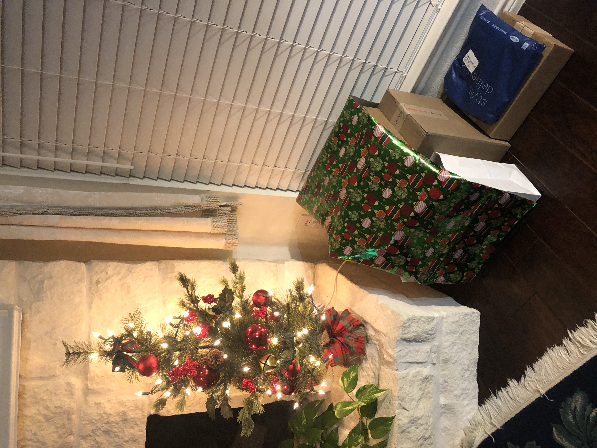
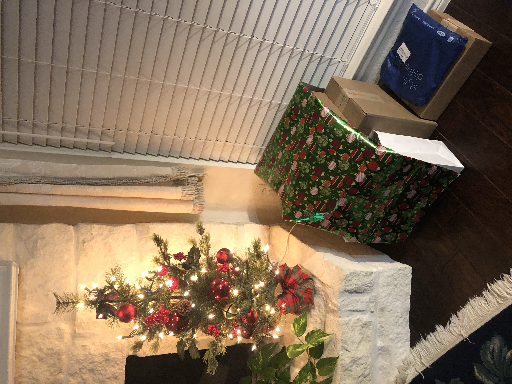
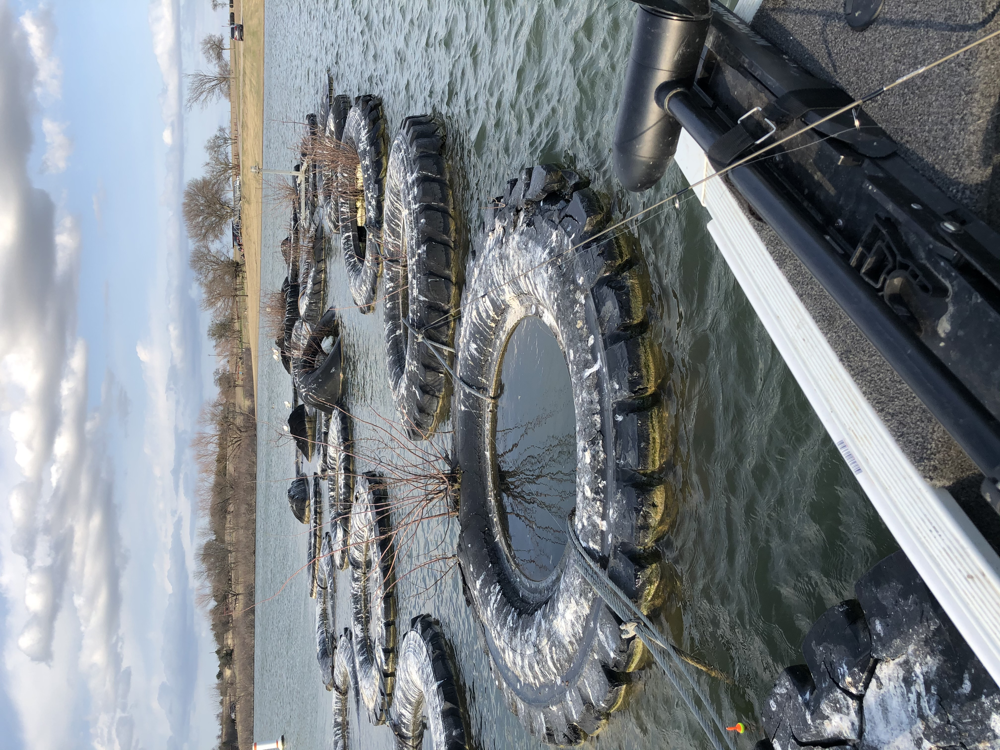
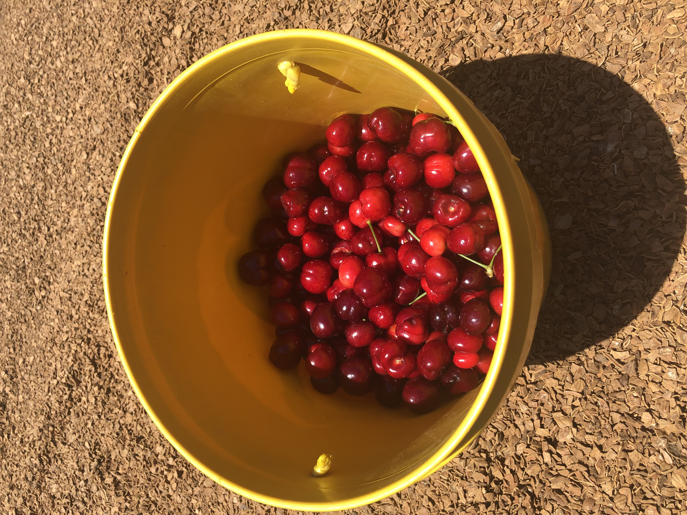
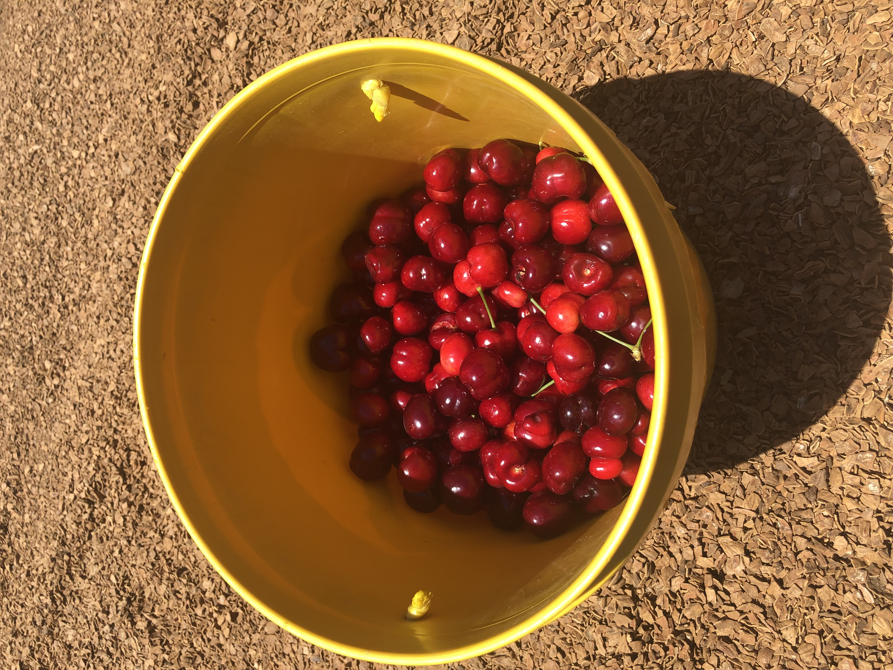
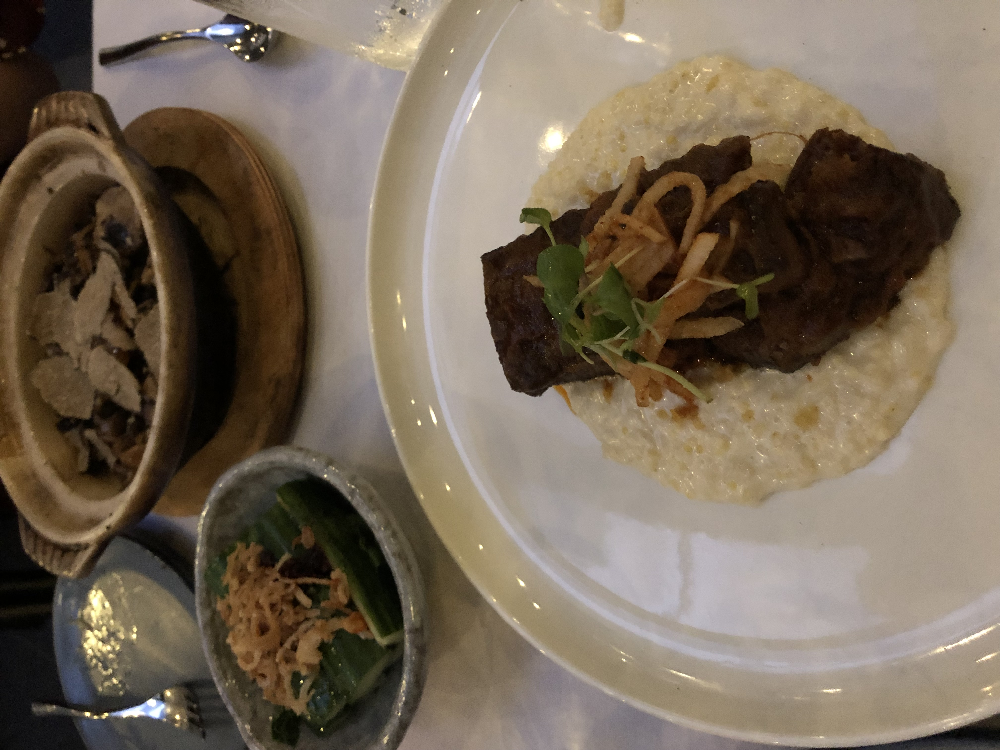

random journal
9/14/20
what brings me joy and rest?
- playing with friends
- going for a walk and run
- eating good food (with people)
- music
- finishing a good book
reflections on the week prior
- letting time carry myself into protected vacation
- not particularly excited or motivated at work; actually, kind of irritable
plans for the week ahead
- work on law school apps
- go into nature
- sleep well
9/20/20


just took a week off for protected vacation
- good reminder that there is a life outside of work and that banking is not normal
- returning back to baseline/normal state
- re-realization of mild depression
how to spend a sabbath?
- watching sermons
- listening to music
- journaling/reflecting
- no reddit/forums/twitch/social media during the day
- simultaneously 1) not worried about maximizing time 2) not doing activities that make time just blur by
reflections on the week prior
- great to be able to disconnect from work
- first feeling of time affluence since starting the job
- chilled, submitted apps, went into nature
- slept 9-10 hours every day
plans for the week ahead
- try to have somewhat of a good attitude
- try to be ok feeling all emotions, not let them control me
- slowly progress a few remaining apps
9/27/20

first week back from protected vacation
- not too bad of a week
- a couple of teams are going live though
- jen arrived!
reflections on the week prior
- fairly chill week work-wise
- a bit less jittery (didn't really feel any "sunday scaries")
- happy that jen is here
- still feels like time is frozen, stuck in a sea of monotony
- still triggered by one team
- progress on remaining apps feels sluggish
plans for the week ahead
- have a hunch the next couple of weeks might get really busy with multiple teams going live
- try to stay at peace / not so easily angered or flustered
- try to progress apps when I can
A successful businessman on vacation was at the pier of a small coastal village when a small boat with just one fisherman docked. Inside the small boat were several large yellowfin tuna. The businessman complimented the fisherman on the quality of his fish and asked how long it took to catch them.
The fisherman proudly replied, “Every morning, I go out in my boat for 30 minutes to fish. I’m the best fisherman in the village”.
The businessman, perplexed, then asks the fisherman “If you’re the best, why don’t you stay out longer and catch more fish? What do you do the rest of the day?”
The fisherman replied “I sleep late, fish a little, play with my children, spend quality time with my wife, and every evening we stroll into the village to drink wine and play guitar with our friends. I have a full and happy life.”
The businessman scoffed, “I am successful CEO and have a talent for spotting business opportunities. I can help you be more successful. You should spend more time fishing and with the proceeds, buy a bigger boat. With the proceeds from the bigger boat, you could buy several boats, eventually you would have a fleet of fishing boats with many fishermen. Instead of selling your catch to just your friends, you can scale to sell fish to thousands. You could leave this small coastal fishing village and move to the big city, where you can oversee your growing empire.”
The fisherman asked, “But, how long will this all take?”
To which the businessman replied, “15 – 20 years.”
“But what then?” Asked the fisherman.
The businessman laughed and said, “That’s the best part. When the time is right you would announce an IPO and sell your company stock to the public and become very rich, you would make millions!”
“Millions – then what?”
The businessman said, “Then you would retire. Move to a small coastal fishing village where you would sleep late, fish a little, play with your kids, spend time with your wife, stroll to the village in the evenings where you could sip wine and play your guitar with your friends.”
- from Reddit 9/29/20, from some parable
10/4/20

people need to look up at the stars more
reflections on the week prior
- might be developing a heightened level of anxiety
- stomach has been uncomfortable for a while
- felt better on Saturday (no work, out on lake)
- don't think it's diet related
- the lake is nice
- submitted nyu app
- jen here! been nice to have someone else here
- continuously feeling disillusioned with work
- fake deadlines, no boundaries, unclear expectations
- been thinking about my mindset more lately; mindset toward next half year? just get through banking? or is there more
plans for the week ahead
- just get through it?
- nothing really comes to mind. am I just waiting until this is over?
- more apps...
10/11/20

what gives me energy?
- playing with friends
- interesting conversations
- quality time with family
- making something that I'm into (k'nex, music, vlog, website)
- completing something
reflections on the week prior
- happy that jen was here, especially just the companionship
- still feeling like I'm just getting through it
- initial consultation with a therapist, felt kinda meh, and it's expensive
- stomach feeling better
- not very motivated, yet still unnecessarily anxious
- submitted upenn app
plans for the week ahead
- nothing really comes to mind
- work on yale app?
10/18/20
reflections on the week prior
- pretty tough week of work (long weekdays, long Sunday)
- very chill Saturday, didn't really go anywhere or do much
- not sure what to do with scarce time. with unlimited time could just roll around all day. with scarce time, feel conscious about trying to optimize it
- started reading Michelle Obama's Becoming
- wrote draft of Yale essay
- voted
- just waiting for work to end
plans for the week ahead
- get through it?
- revise Yale app
10/25/20


what makes me sad these days?
- mourning (not getting to experience nyc, lost communities, what could have been)
- how I think about time (too conscious of it, not just living in it)
- work, obviously
- loneliness (not a clear friend group)
reflections on the week prior
- randomly posted on fb if anyone wanted to play tennis. a few people responded, played tennis that night!
- fishing on saturday night was fun. got to see dad and his friends just being friends
- not really feeling like I "reset" every week -> need more time to disconnect from work
- emotionally tired. and also emotionally constipated. just want to cry a bit everyday. generally sad
- having a chill Sunday is so nice as far as feeling more relaxed and ready for the next week
plans for the week ahead
- get through work
- submit yale app
- consider other apps
11/1/20


reflections on the week prior
- even though already unhappy (with work), still getting more unhappy
- generally unhappy / lonely
- mental health not great; not sleeping well; dreaming about work frustrations
- however...
- glad to have people to play tennis with
- thankful for dad and going fishing with him and eating food together
- thankful that a friend randomly facetimed me Saturday night
- submitted Yale app
plans for the week ahead
- address work and mental health somehow, whether it's talking to manager or something else
11/8/20


things I am thankful for:
- despite a rough start, had a chill Fri-Sun
- cane's manager gave free box combo when I forgot my wallet at home (grace)
- small group
- my dad, who I'm currently living with, and my mom too of course
- tennis with Richard
- tried a BigMac for the first time, pretty good
- fishing, and frying the fish
- Dubai team covered early morning Sunday call
- very chill Sunday
reflections on the week prior
- having extended (>24 hours) of chill/relax time makes such a big difference for mental health
- starting to get a bit anxious about hearing back from law schools
- 2020 election happened
- reading through my old entries, am feeling a bit less pessimistic (maybe because had more chill time, starting to look forward to Thanksgiving)
- read a good chapter in "Anxious for Nothing" about having control over my head space and what thoughts I allow myself to think
plans for the week ahead
- potentially submit more law school apps
- look forward to Thanksgiving soon
11/15/20

I cannot believe it is already mid-November
reflections on the week prior
- chill Thu/Fri/Sat/Sun; makes such a big difference for mental health, feeling of disconnecting from work
- feeling better
- got to play tennis on Friday, cook curry on Saturday
- worked on apps with Chris and submitted UVA
- time feels like it is moving quickly, especially week to week
- thinking about COVID: appreciate that it happened during my IB years, but sad that those are also NYC years
- mourning loss of communities (NYC due to COVID, Yale due to graduating lol)
plans for the week ahead
- maybe submit more apps, maybe not
- one more full week then it is Thanksgiving week!
11/22/20


reflections on the week prior
- pretty chill week, and the weeks feel like they are going by fast
- really enjoyed Friday night: on discord with friends, playing games and chilling
- spending time with dad is nice: eating together, going on walks
- invited to interview at Chicago
plans for the week ahead
- looking forward to Thanksgiving
- though the first half of the week seems like it will be really busy for work
- trying to keep up a positive attitude before Thanksgiving
11/29/20


things I'm thankful for
- Thanksgiving! and 4 whole days off (and a BUM that pushed for it)
- family and friends
- jen
- discord and computer games with friends
reflections on the week prior
- got accepted into nyu law
- otherwise, a pretty rough week for work in the first few days
- having Thursday through Sunday off has been really nice
- didn't really do much, the days kind of just breezed by
- I think I just appreciate being able to sleep in and having nights off
- trying to be more neutral about how I feel with time; natural to be happier on Friday nights, sadder at the end of time off
plans for the week ahead
- uchicago interview tomorrow morning
- kind of just bracing myself for a rough week back and a scramble before the holidays
12/6/20


reflections on the week prior
- uchicago interview on Monday
- otherwise, a pretty uneventful week
- relatively chill work week - was not as bad as I was anticipating following Thanksgiving
- went on walks, played league with friends
- Christmas season approaching, lots of decorations around the neighborhood
- mental health feels like it's in a good place (steady)
plans for the week ahead
- columbia interview tomorrow morning
- hopefully a calm week
12/13/20
reflections on the week prior
- columbia interview on Monday
- a thoroughly chill week
- had minimal work during the weekdays and no work today on Sunday
- on Saturday, really felt like I had a reset: especially with DQA TFT coaching
- definitely feel much less on edge
plans for the week ahead
- harvard interview tomorrow morning
- hopefully another calm week
12/20/20

reflections on the week prior
- another chill week!
- harvard interview on Monday, felt happy with how it went; really nice interviewer
- fantasybball draft with friends from home, among us with old UCW friends
- downloaded valorant
- thankful for minimal work and time to play online games with friends
- but, starting to have a sense of annui; less things preoccupying me (work, law school apps)
plans for the week ahead
- hopefully a few days off for Christmas
- how should I fill free time?
12/27/20
 


things I like to do
- these days, discord-centric with friends: league, TFT, valorant, NBA
- outdoor views
- get good food
reflections on the week prior
- Christmas week
- very chill week, chill days leading up to Christmas too
- no law school related activity, just waiting
- lots of time with family
- finished bojack horseman
- went to a wildlife refuge
- white elephant gift activity with nan and her friends
- want to get better at valorant...
plans for the week ahead
- hoping for another chill week (between Christmas and New Years)
1/3/21
reflections on 2020 (written on 12/31/20)
- a year dominated by work and COVID
- looking back on old texts, I do think I have grown since college, in a maturing way
- generally more seasoned of a person
- I would like to think I am more emotionally resilient
- have been remote/WFH/quarantining for around 10 months now
- a lot of what I learned came out of the struggles of work: learning to handle adversity, not being in control
- in a word: resilience
chronological breakdown of 2020
- 1. Jan-Mar: coming off tough work project, into birthday
- 2. Mar-Jun: COVID starting (what the heck is going on?), living with Nan and Aaron, TFT
- 3. Jun-Sep: came home, very tough work project, combined with stress about law school apps; extreme feelings of time scarcity
- 4. Sep-Dec: progressively chiller, work not as bad, submitted law school apps, lots of Discord/League/ARAM/NBA
things I did
- read Bible daily since last New Year (read Genesis through 1 Samuel)
- hit Diamond 2 in TFT; played a lot of ARAM; started Valorant
- read a few books: The Defining Decade, Little Fires Everywhere, Becoming
- moved back home (temporarily)
- lots of walks
what I'm looking forward to in 2021
- quitting investment banking
- starting law school (COVID permitting) or a new job (hopefully healthcare startup related)
- being with friends and in community again
- basically, a change of scenery
reflections on the week prior
- chill week with New Year's
- talked with fam about plans for pest control business
+++ Pest Control Meeting Notes 1/1/21 +++
- a few possible paths:
- 1. sell business
- 2. partner/merge business (potentially with Wylie business)
- 3. run out the business, then stop
- 4. hire technicians and formalize the business
- plan for now: try to hire technicians by October; run business until 65; then look to partner
1/10/21

reflections on the week prior
- made a new friend at the Murphy tennis courts // went to hit by myself, but another guy there was too, so I asked to play together
- I have a strong sense of how things "should" be, and deviations from that are a source of discontentment. examples below:
- - on Friday night, I "should" be socializing or with friends (over discord games or whatever); if not, feel sad and lonely
- - on Thursday night, I "should" get off at a reasonable time and have time to rest; working late into the night very upsetting
- - on Saturday night, I "should" be using time to spend with dad; if I'm doing something in my room, I feel guilty
- - I "should" have the chance to go on walks with my parents, to watch sermons on Sunday, to eat meals peacefully, to rest and unplug from work
- finished reading Brave New World
- a challenging week toward the back end, working on an IPO pitch, went to bed at 5am ET Thursday night; felt trapped, stressed, dreamed about work
- things that made me happy: sleeping in, cooking noodles with dad, facetiming jen, first snowfall of the year on Sunday!
- watched a relevant sermon today about trusting in God amidst uncertainty and anxiety
plans for the week ahead
- first wave of HLS acceptances released tomorrow; fingers crossed; a bit nervous // keeping my peace either way
- hopefully calmer after submission of IPO pitch tomorrow
1/14/21 (special edition entry)
Today I got into Stanford Law School. It was almost noon, and I was doing work, when I got the call. Upon seeing the 650 area code, I paused, then answered. It was the dean of the school. The phone call ended up lasting 4 minutes, but it felt like forever. The whole time I was pretty shaken and pacing back and forth in my room. After much anticipation, I was delightfully shook.
People joke that getting into law school is the happiest part of law school. I definitely felt happy - happier than I felt getting into college. At the same time, life goes on. Still more work to do, and the same desires that affected me the day before still affect me today: longing for community, appreciating my family, enjoying good food and company. Don't get me wrong. I am very very excited, for the education, for the people I'll meet, for the opportunities I don't even know of yet; for Stanford! But, I have been praying that whether I get good or bad news during this application cycle, that I would keep my peace.
1/18/21 (written on a Monday due to a "long weekend" with MLK)

reflections on the week prior
- got into Stanford!!
- caught up with some friends (David, Xindi, Deanna, Chris) and told them about Stanford
- lots of valorant and crossword puzzles with friends
- fishing was good to get outdoors
- anxious and frustrated with what feels like a lot of impending work ahead, especially early mornings
plans for the week ahead
- try to stay calm with work
1/25/21 (written on a Monday because yesterday was challenging)
reflections on the week prior
- a thoroughly tough week of work (weekdays plus Sunday yesterday). started and ended rough
- frustrated with work and the people at work, who seem unreasonable or are not doing their part
- frustrated with the culture of banking - the equation is:
- - assuming we achieve X, analysts then work as much as needed to achieve that (late nights, weekends, inefficient iterations)
- - instead, it should be assuming a finite analyst amount of labor (assuming sustainability), what is the best we can achieve?
- took today Monday off. sent an email in the early morning: "Due to personal health reasons, will be offline today. Thank you for your understanding"
- - physical health: have not been sleeping well due to stress, have been experiencing chest tightness/pain and shortness of breath
- - mental health: frustrated, stressed
- - part of it is making a statement: I dare you to challenge me on this
- - hopefully the start of a conversation on wellbeing. maybe not.
- - how I spent the day: slept in, cleaned bathroom, vacuumed room, ate chipotle, looked at law school financial aid info, played tennis, dinner with dad, washed dishes
- with that said, Saturday was really, really nice (see photo). only wish that I had more time, not how I spent it
- got into upenn, uchicago, and columbia law (full-ride @ columbia)... don't think I've really processed this
plans for the week ahead
- funny how last week I said "try to stay calm with work"; I guess that's my hope for this week too
1/31//21
(written one or two days ago) my dad said that during hard times, it can be helpful to think "at least..."
i.e., even though X is bad, at least Y
so here goes for this week. context is had a follow-on blow up Thursday night, launching Monday
- at least it's a follow-on and not an M+A process
- at least diligence calls were suggested for Sunday, not Saturday
- at least we get to do abbreviated memos
- at least it's a good team
- at least it's an interesting company doing good science
- at least the company is scheduling around pacific time, meaning less early meetings
reflections on the week prior
- thinking about writing these entries on Saturdays instead of Sundays
- recent Sundays have been so busy with work, they feel like a new week, not a point of pause and reflection
- this week I abruptly took two days off for personal health (chest tightness and pain, shortness of breath): physical and mental health
- got rolled off my least favorite team, but haven't had a chance to process this and be happy about it yet
- follow-on deal blew up Thursday night, launching tomorrow (Monday) morning
- feel like I just can't catch a break
- nonetheless, still trying to remember the good things
- - took two days off
- - played Valorant and catan with friends
- - went to Bob Woodruff park with friends
- - quality time with dad
- - connected with my sister talking about mental health
- - scheduled a mental health appointment
plans for the week ahead
- please let there be rest
2/7/21

reflections on the week prior
- a good solid week
- chiller than the prior weeks
- ate out a lot with dad (pho, chinese takeout)
- good long Sat: woke up at 530am to go fishing, played tennis in the afternoon, discord and games with friends in the evening
- not sure what it is I am looking forward to or what I am seeking: each day is just looking to play computer games with friends at night
- bit checked out at work
- one of my fave associates leaving
- invited to friends' wedding
plans for the week ahead
- hopefully chill week, taking Friday off for Chinese New Year, into a long weekend (President's day)
2/14/21


新年快乐！
reflections on the week prior
- taking a 4 day weekend: Friday off for Chinese New Year, into Monday President's day holiday
- don't really remember the work week, which I guess is good because it means I'm relatively distanced from it
- thankful to spend Chinese New Year at home with family, and taking days off from work
- also Valentine's day this week, glad to spend it with jen virtually
- even more jaded and unmotivated with work than before; feel like I can or should quit any day
- think I have had too much discord games, especially valorant. need to take a break from it
plans for the week ahead
- one more day off tomorrow
- hopefully fairly chill
2/21/21


the week that Texas froze over
reflections on the week prior
- rolling power outages throughout the week due to cold weather
- no power, no internet, no cell service
- I kind of liked it; time froze; just chilling with fam; reading books; sleep early and wake up late
- started and finished reading Interior Chinatown
- originally took last Friday off for CNY, turned into not working for 9 days due to the outages
- feels harder and harder to get back into the work of investment banking
- oh, and spent real life money on a valorant celestian phantom skin lol
plans for the week ahead
- well, back to work after what has unintentionally amounted to the length of a protected vacation
- try to keep my calm despite all my misgivings of working in investment banking, trauma(?) from overwork, the work life culture, etc.
2/28/21

turned 24!
reflections on turning 24
I think as I've grown older, and especially this year, I don't really look forward to birthdays much anymore. I think I would prefer to stop growing up now, and in general, growing up seems tough. Communities and friendships are less easily accessible, you have to start taking on greater life responsibilities, and you have to craft your own path. Plus, your parents are getting older. Nonetheless, I am thankful for birthdays as a time to reflect, a time to be grateful, and a time to connect with friends.
things I'm thankful for as I turn 24
- family (mom and dad, sister, brother-in-law, and niece) that love me and support me, and have sacrificed to provide for a better life for me
- a loving, kind, and thoughtful girlfriend
- friends (from childhood, from high school, from college, from discord games, and even a few from work)
- a job that pays well and has good benefits
- acceptances to Stanford and Harvard law schools, among others
- a general feeling of confidence as I look ahead to the near future; even if not always happy or optimistic, a general sense that the future outlook is at least alright
- quitting ib in a few months
reflections on the week prior
- not too bad a week after being offline a whole week due to Texas storm outages
- thankful for friends and a birthday to reminisce on the past year and years
- just starting to get inklings of seeing the light at the end of the tunnel with work
plans for the week ahead
- try to find a little joy each day; try to have peace at work; try to have kindness with friends; try to have thoughtfulness with family and loved ones
3/7/21

reflections on the week prior
- a fairly low week of work; everyone I spoke to was openly unhappy
- making moves to potentially leave early; emailed the director of a policy institute
- outside of work was good; reconnecting with andrew over valorant
- getting the "sunday scaries" as early as Friday night
plans for the week ahead
- hoping for a good conversation with the director of the policy institute tomorrow
- there is a nonzero chance this is my last week of banking
- try to maintain my peace
3/14/21

written on 3/23/21 because I forgot to do this last week
reflections on the week prior
- I remember that I was thinking really hard about whether to stay or leave GS for the policy research center
- director of the research center willing to hire me even for a shorter period
- went fishing with fam!
3/21/21


written on 3/23/21 because I forgot to do this yesterday
reflections on the week prior
- made the decision to take the policy research job
- work was fine
- two notable events
- - 1. shooting in Atlanta of primarily asian women
- - 2. GS survey of terrible working conditions got reported in all the major news outlets
- for both of these, what will change? I do not know or see anything
3/28/21
reflections on the week prior
- quit and unquit my job (long story short, would have been required to take a month long garden period)
- - 1) did not want to reduce the already-short time at the research place
- - 2) did not want to be idle for a month yet, want to take that time right before starting school
- - thinking of this as a resetting point; 3 more months until the finish line; basically just an internship's worth of time left
- - my friend says "the best days are still ahead" - I think this is true, especially as we get closer to the end
- pretty chill week of work
- glad to have gone fishing with my parents yesterday
- the notion of making plans for the wedding in May and returning to NYC is exciting
plans for the week ahead
- none, to be honest
- Good Friday and Easter next weekend
4/4/21

Good Friday and Easter weekend
reflections on the week prior
- chill week plus 3 day weekend
- honestly, feeling ennui and a bit lonely - not really doing much or have much planned
- at the very least, time is passing by, and bringing me closer to when I quit GS
- happy spending time with jen, watching movies/TV/youtube, doing avengers/fast food tier lists
plans for the week ahead
- try to hold it down following this nice long weekend
- request protected vacation for May
4/11/21

reflections on the week prior
- got 2nd dose!
- pretty chill work week
- confirmed week of protected vacation in may
- bit of conflict with parents about going to a wedding in may
- letting small things at work get to me
plans for the week ahead
- keep holding it down at work and try not to dwell on irritations
- SLS admitted student activities
4/18/21

reflections on the week prior
- another pretty chill work week
- a lot of SLS admitted student zooms
- grilled food with dad one weekday dinner
- went on a walk with darshan and sarah on saturday
- feeling a lot of ennui: not much (meaningful) stuff that I am doing, bored, stuck at home
plans for the week ahead
- maybe start reading books again or something
4/25/21

reflections on the week prior
- a fairly chill work week, with a few workstreams starting to pick up
- mom went to help with sarah again; looking forward to quality time with dad
- GS starting WFH meal stipends is nice
- 10 weeks left of GS
- letting people down can feel hard: not going to LAT wedding, not going to SSP
plans for the week ahead
- if I feel anxious, focus on the feeling; maybe that will help break the mental habit of feeling anxious when it is unwarranted
5/2/21
reflections on the week prior
- committed to SLS; turning down HLS was harder than I thought, did not like the feeling of disappointing parents
- had an honest conversation with mom and dad about not wanting to disappoint them; they are honest with me with their preferences (HLS), yet still support me in my decisions (SLS)
- I think I will be happier at Stanford
- chill work week
- last weekend at home
- really enjoyed fishing Saturday morning: perfect weather (60s, cloudy, no wind), nice pace of catches
- I think I need to get better at making decisions: taking it to God, having more conviction
- I think I really care about making my parents happy, maybe to the point where I lose a bit of my own independence and thinking
plans for the week ahead
- one more week until protected vacation, wahooo!
1/14/21 (special edition entry)
After 11 months, tomorrow I am once again leaving home. It is the longest stretch I have lived at home since high school. I am so thankful to have spent time at home with my family during such a weird time. It is a moment of reflection of a few threads during this period:
- law school: applying, interviewing, getting acceptances, and making a decision
- work: really painful summer, extreme feelings of time scarcity, anxiety, anger
- fishing: with dad, for peace, to get away from work, to spend time with dad
- tennis: started with a FB post, playing tennis again with friends
- walks: with mom and dad, every night, after dinner
- discord: playing league then valorant and making new friends on discord
5/9/21

reflections on the week prior
- fairly chill last week of work before protected vacation
- flew to LA to see friends who attended LA/Tim waiting and to then spend next couple of weeks with jen and her family
- felt surprisingly normal to be around other people again - at the beach, at kbbq, at a bar
plans for the week ahead
- enjoy quality time with jen at an airbnb near sequoia national park
5/16/21


reflections on the week prior
- a nice, peaceful, lovely week in visalia and sequoia
- hiking during the day, cooking meals, watching movies together at night
5/23/21

 

reflections on the week prior
- spent the week in SF at jen's family's place
- thankfully had a pretty chill week of work
- was nice to just live life with jen and her fam: meals, walks, church, watching TV, cherry picking, etc.
- also, flew back to NYC: going back to my apartment feels a bit weird and nostalgic, yet still comfortable
plans for the week ahead
- this will be an interesting week: going into the office, being back in nyc
5/31/21
reflections on the week prior
- definitely felt transition pains coming back to NYC: loneliness, difficulty sleeping, stress, plus work anxiety
- felt like a tough week of work, a lot of stress and anxiety over the week
- BUT, memorial day weekend was really awesome: chilled, baked cake, valorant, got food at steven's place with friends
- got my new laptop, feeling better at valorant, good to play with friends again
- great to hang out with deanna too, who was visiting nyc for the long weekend
plans for the week ahead
- 5 weeks left of work; I am too close to being done to let work upset me
6/6/21
reflections on the week prior
- starting to feel a bit more settled in to NYC: I know it takes time
- work week was mild, met up with albert and faith and then josh m on saturday
- jen arrived this morning sunday; nice to hang out with her and steven too
plans for the week ahead
- enjoy the week while jen is here
- 4 weeks left of work
6/13/21

reflections on the week prior
- a lovely week with jen here
- work not too bad; does feel like things are starting to slow down (knock on wood)
- dinner date with jen on friday and then drinks with friends after
- visited nan, aaron, and sarah with jen: lunch from steamed, strawberry picking, dinner at jack's
- was truly awesome seeing my niece again after not seeing her since she was 1 day old
- got to visit kevin kim as well, very chill
plans for the week ahead
- work will be interesting now that interns are starting and more people will be in the office
- 3 weeks left of work
6/20/21
reflections on the week prior
- overall, a pretty chill week
- got to see old friends again:
- - justine and laura for brunch on saturday
- - andrew chung and other friends for pizza on saturday
- - diane and michelle for lunch on sunday
plans for the week ahead
- david is back in the city! should make work and everything better
- talking to jen about relationship expectations tomorrow
- 2 weeks left of work
6/27/21
reflections on the week prior
- work not too bad
- david back in the city, met a few interns
- so nice hanging out with other friends; was looking forward to spending time together, did not realize it would also be a goodbye
plans for the week ahead
- last full week of gs
7/5/21 (july 4th weekend)
reflections on the week prior
- very chill week
- finally did chicken nuggets and margs with david and double macho nachos with elaine
- a full and fulfilling weekend:
- - Saturday: chilled around LIC with steven, sam, and other friends
- - Sunday: july 4th, central park, fireworks, biked around roosevelt island with josh m, amy
- - Monday: visited nan, aaron, and sarah in new haven, went to the beach
plans for the week ahead
- last day at gs tomorrow
- spending time with friends and packing up my stuff
other
- As this era of NYC / GS / banking comes to a close, I think this will be my last regular weekly entry. It has been a place to record and see the evolution of my thoughts, especially during the harder times. I may add additional entries again from time to time (maybe when I leave NYC or start school). TBD.
Pre-SLS Thoughts
I think it is fair to say that I definitely had (have) a lot of misigivings about law school. The cost ($, time) and opportunity cost (lost income) are immediate and concrete, whereas the potential benefits seem nebulous and further away. Plus, there is added stress from classes, job recruiting, moving to a new place and community, etc. I think as the date gets closer, the anxiety is starting to outweigh the excitement. But tonight, I had a good conversation with my parents about this.
Overall, I think I realized two things about myself:
1) I worry too much. There is so much to be excited about for law school. Going to an incredible university with incredible people (classmates and professors). Moving to a new geography on the west coast. I realized I worry too much when I was trying to understand the merits of law school with my dad. I was and am very caught up in the weeds: getting good grades, competing with classmates, looking for jobs. From my dad's POV, it was an incredible opportunity and privilege to keep learning for the sake of learning and maturing. To try my best and that's it. I do think my dad's POV is a bit pie-in-the-sky and privileged, but it merits a good point at the very least in terms of the attitude I should have toward school - to just be excited about learning and the many unknown opportunities that await.
2) I hold too tightly to a false notion of perfection. I think I have this false notion that so far, I have followed a life of near perfection: Yale, GS, and now SLS. And each step of the way, it is about hitting the "ideal" next thing. I feel like this is severely clouding my outlook on the future.
It yields this ever-present fear of failure, and subsequently, unnecessary stress and anxiety. Even now, I am worrying about getting good grades in classes, getting an internship in healthcare litigation, etc.
It limits my upside - once I hit the goal, I kind of just stop thinking about more things. After getting into SLS, I rest easy, play valorant, workout, and just chill.
It makes me procrastinate - the need to do "big tasks" well, like the GSB app, makes me more inclined to procrastinate, relative to smaller lower stakes tasks like activating a credit card.
Thoughts now on attitude going into law school: I don't think I will be able to just turn on a switch and waltz into school happily and carefree. So I guess it'll be like this - when it's hard I'll have to walk by faith, and when it's easy I'll do my best to enjoy it.
2/28/22
Birthdays are opportunities for reflection. I think as I’ve grown older, I’ve come to realize it’s okay that birthdays aren’t these huge events. They don’t have to be a day of extraordinary happiness. They don’t have to be full of people and partying. I think as you get older, actually, less and less people celebrate with you. Your circles get smaller, even if the total number of circles you’ve touched continues to increase. I think what matters is that you cherish and hold tightly to those who are in your circle. Time separates, but time also prunes.
This time last year, I had a vague sense that I would be in law school, and felt generally confident about the future. I think I am still generally optimistic. In the last year, I quit my job at GS (my first job out of college), moved away from NYC (although who knows, maybe I’ll go back), lived at home for several months, played a lot of Valorant, and then, of course, did law school. The day to day can be a grind, but overall, I think I’m pretty happy with where I am. Well, maybe happy isn’t the best word. Content.
Still, I think I agree with myself from a year ago. I no longer really wish to get older. But I guess that’s a part of maturing.
In the year ahead, I want to be more present in the present, and I want to show more grace to myself. I can be more engaged with the people I’m surrounded by and the circumstances I’m currently in. I can be less hard on myself while being more patient with others.
Cheers to 25.
2/27/23
Day before 26th birthday. If I am being completely honest, I don't really look forward to birthdays at all. I wish time would just slow down. I miss the naivety of being younger. Now, it just feels like more expectations and more responsibilities. And yet, currently, I still have so much agency.
Objectively, my day-to-day is really great. At the moment, I only have class two days a week. I have a lot of free time to spend however I want. Movies, computer games, gym, basketball, golf, tennis. Even new things I am hoping to pursue like snowboarding. Looking for jobs.
But I still feel a sense of emptiness or loneliness. On emptiness - I think that just living a comfortable life is not very satisfying. Maybe part of it is that I need to learn to embrace a slower pace, to embrace rest, to embrace and enjoy a quiet period. On the other hand, perhaps I need a little bit more to feel a sense of fulfillment. On loneliness - community in law school has not been great recently. In my head, I think I do have a lot of friends here - I can count them. But in reality, it just feels like people are really busy all the time. Other people may value community, but for them, it doesn't take priority over other things like school. I find myself constantly desiring a greater sense of connectivity with my friends and peers. Maybe next year at GSB will be better. Or, maybe I just need to cultivate a greater satisfaction from being alone and being with myself.
I also feel a great weight with the anticipation of engagement and married. I love my girlfriend. She is kind, thoughtful, and brilliant. And yet, the gravity of marriage weighs heavily on my entire being. I don't think I want to break up. But I'm not sure that moving forward is necessarily healthy. I think that I am just hoping that with time, I will grow into it. There is this unsolveable balance between rising up to the occasion and backing down in acknowledgement of my own hesitation. I do not know which is the right answer.
All in all, because of these reasons, I feel that I am at a strange crossroads in my life. I cannot foresee what the year ahead of me will look like. And still, I grow older. I guess I am 26 now.